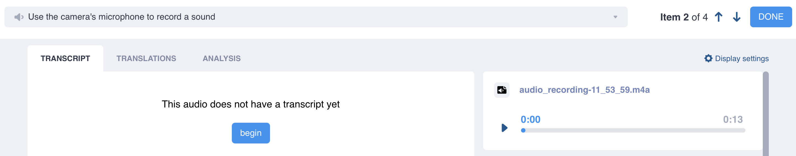
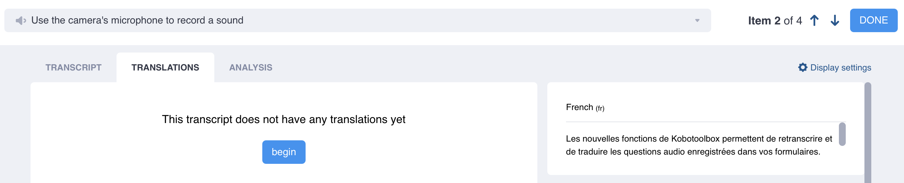

Parcourez la base de connaissances, explorez nos ressources et visitez notre Forum communautaire pour des informations plus détaillées
Dernière mise à jour : 14 Jun 2026
Les outils de traitement du langage naturel de KoboToolbox vous aident à collecter, gérer et analyser des données qualitatives plus efficacement. Ces outils comprennent la transcription automatique de la parole en texte et la traduction automatique, qui peuvent préparer les réponses audio à l”analyse qualitative automatisée.
Cet article explique comment transcrire des réponses audio et traduire des transcriptions, notamment les langues prises en charge et les limites d’utilisation des options automatiques.
Note : La transcription et la traduction automatiques peuvent ne pas être disponibles pour toutes les langues. Pour ces langues, seules la transcription et la traduction manuelles sont possibles.
Pour utiliser les fonctionnalités de transcription et de traduction de KoboToolbox, commencez par collecter des réponses audio dans votre formulaire à l’aide du type de question Audio ou des enregistrements audio d’arrière-plan. Après avoir transcrit et traduit les réponses audio, la transcription originale de vos fichiers audio ainsi que tous les textes traduits sont ajoutés en tant que nouvelles colonnes de données dans le tableau de données et peuvent être téléchargés avec vos données d’enquête.

Pour commencer à transcrire vos réponses audio :
Ouvrez votre projet et accédez à DONNÉES > Tableau.
Cliquez sur le bouton Ouvrir à côté de la réponse audio que vous souhaitez transcrire.
Dans l’onglet TRANSCRIPT, cliquez sur begin.
Sélectionnez la langue d’origine du fichier audio.
Si disponible, sélectionnez l’option automatic. L’option manual vous permettra de transcrire manuellement l’enregistrement audio dans n’importe quelle langue.
Cliquez sur create transcript pour lancer la transcription automatique.
Une fois la transcription terminée, vous pouvez la modifier manuellement. Vous pouvez lire l’enregistrement audio en haut à droite pour vérifier l’exactitude de la transcription.
Après avoir modifié la transcription, cliquez sur le bouton Sauvegarder pour vous assurer que votre travail est bien enregistré.
Une fois terminé, cliquez sur TERMINÉ pour quitter, naviguez vers la soumission suivante en cliquant sur les flèches à côté du bouton TERMINÉ, ou passez à l’onglet TRANSLATIONS.
Si vous cliquez sur TERMINÉ, vous serez redirigé vers le tableau de données, où une nouvelle colonne contenant la transcription aura été ajoutée.
Note : Les transcriptions et traductions générées automatiquement doivent être sauvegardées pour éviter toute perte de données. Quitter la page sans sauvegarder entraînera la perte des données.

Une fois que vous disposez d’une transcription complète pour votre réponse audio, vous pouvez ajouter des traductions dans plusieurs langues :
Accédez à l’onglet TRANSLATIONS.
L’option de traduction n’est disponible qu’une fois la transcription terminée.
Cliquez sur begin et choisissez la langue de la traduction.
Si disponible, sélectionnez automatic pour la traduction automatique. L’option manual vous permettra de traduire manuellement la transcription dans n’importe quelle langue.
Cliquez sur create translation pour lancer la traduction automatique.
Une fois la traduction terminée, vous pouvez la modifier manuellement. La transcription originale apparaît à droite de l’écran, et l’audio original apparaît en dessous.
Après avoir modifié la traduction, cliquez sur le bouton Sauvegarder pour vous assurer que votre travail est bien enregistré.
Une fois la traduction terminée, vous pouvez ajouter une autre traduction en cliquant sur new translation, passer à la soumission suivante en cliquant sur les flèches à côté du numéro d’élément dans le coin supérieur droit, ou cliquer sur TERMINÉ pour revenir au tableau de données.
Note : Les fichiers audio ne peuvent contenir qu'une seule transcription, mais chaque transcription peut avoir plusieurs traductions.
Les fonctionnalités de traitement du langage naturel de KoboToolbox intègrent des capacités de reconnaissance automatique de la parole (ASR) et de traduction automatique (MT) fournies par Google Cloud Compute, qui propose actuellement la transcription automatique dans 80 langues (avec 145 variantes régionales) et la traduction automatique dans 129 langues.
Pour la transcription ou la traduction manuelle, vous pouvez choisir parmi environ 7 000 langues basées sur la liste complète ISO 639-3, maintenue par SIL International (filtrée pour les « langues vivantes »). Si une langue est compatible avec l’ASR ou la MT, vous pouvez choisir entre les méthodes manual et automatic. Pour les autres langues, seule la méthode manual est disponible.
Pour une liste complète des langues prises en charge, consultez Langues disponibles pour la transcription et la traduction automatiques.
Si vous ne trouvez pas une langue dans la liste, envisagez d’autres orthographes ou noms. Tous les noms de langues sont actuellement répertoriés en anglais (par exemple, Spanish au lieu d’Español). Pour les langues avec moins de locuteurs, il peut exister des noms alternatifs. Par exemple, la langue Bura du nord du Nigeria est répertoriée sous le nom Bura-Pabir, mais est également connue sous les noms Bourrah ou Babir.
Note : Lors de la transcription manuelle de réponses audio, il est important de sélectionner la langue correcte. Si la transcription générée manuellement ne correspond pas avec précision à la langue ou à la région choisie, les traductions automatiques ultérieures utilisant cette transcription risquent d'être incorrectes et de produire des inexactitudes.
Les utilisateurs du plan Community peuvent utiliser jusqu’à 10 minutes de transcription automatique de la parole en texte par mois et jusqu’à 6 000 caractères de traduction automatique de transcription par mois.
Si vous avez besoin d’une capacité de transcription ou de traduction supérieure, vous pouvez passer à une offre supérieure avec un quota plus élevé ou acheter un supplément Natural Language Processing (NLP) Package. Les suppléments sont disponibles en fonction de vos besoins en traitement de données, à partir de 9,95 $ pour 100 minutes de transcription supplémentaires et 60 000 caractères de traduction supplémentaires. Vous pouvez toujours continuer à transcrire et à traduire des réponses audio manuellement sans limite d’utilisation.
Avez-vous trouvé ce que vous cherchiez ? Les informations étaient-elles claires ? Manquait-il quelque chose ?
Partagez vos commentaires pour nous aider à améliorer cet article !
KoboToolbox est maintenu par Kobo Inc.